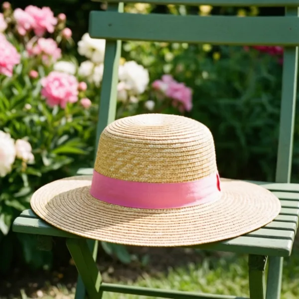

Lately


I grow flowers and write about gardens.
I grow cut flowers on a small plot outside Sampletown, and I write about what the garden teaches me.
Every other Sunday I send a letter: what to sow, what failed, what is in bloom.
To write to me:hello@example.com